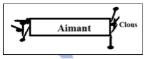

Les aimants
Un aimant est un objet qui a la propriété d'attirer les petits matériaux en fer. 
Les types d'aimants
Les aimants prennent différentes formes telles que les barreaux droits, les aiguilles de boussole ou encore les aimants en U comme les fer à cheval. On rencontre également d'autres formes comme les aimants cylindriques utilisés dans les haut-parleurs.
Les pôles d'un aimant
Un aimant possède deux pôles :
- Le pôle nord (N) : Il est généralement marqué en rouge ou noir et pointe vers le nord géographique.
- Le pôle sud (S) : Il est opposé au pôle nord.
Effet de la cassure
Si un aimant est cassé en deux, chaque partie obtient ses propres pôles nord et sud. Ainsi, couper un aimant crée simplement deux aimants plus petits, montrant qu'il est impossible de séparer un pôle nord d'un pôle sud.
Interaction entre aimants
Les aimants s'attirent ou se repoussent en fonction de l'orientation de leurs pôles :
- Les pôles de noms contraires s'attirent : un pôle nord attire un pôle sud et vice versa.
- Les pôles de même nom se repoussent.
2- Champ Magnétique
2.1- Mise en Évidence du Champ Magnétique
Lorsqu'on place un aimant à proximité d'une aiguille aimantée, plusieurs observations peuvent être faites :
- L'aiguille se réoriente.
- Le pôle nord de l'aiguille s'aligne avec le pôle sud de l'aimant.
- L'attraction de l'aiguille varie en fonction de sa position et de la nature de l'aimant.
L'aimant modifie les propriétés de l'espace environnant, influençant le mouvement des particules chargées et de l'aiguille aimantée. Cet espace altéré est appelé champ magnétique.
2.2- Vecteur du Champ Magnétique
Près de l'aimant, l'aiguille aimantée prend différentes orientations en fonction de son emplacement.
- Direction : indiquée par l'axe SN de l'aiguille aimantée en ce point.
- Sens : du pôle sud (S) au pôle nord (N) de l'aiguille aimantée.
- Norme : mesurée à l'aide d'un Teslamètre ou calculée. Unité : T (Tesla).
- Superposition des Champs Magnétiques : En général, l'aiguille indique la résultante des champs qu'elle subit.
Soient deux aimants, notés 1 et 2. Soit B1 le champ magnétique créé par l'aimant 1 en un point M, et B2 le champ magnétique créé par l'aimant 2 en ce même point M.
Le champ résultant est la somme vectorielle des champs créés par chaque source au point M. \[ \vec B = \vec B_1 + \vec B_2 \]
2.3- Bobines
Une bobine est constituée d'un fil électrique enroulé régulièrement autour d'un cylindre, généralement de section circulaire. Les extrémités du fil forment les deux bornes d'une bobine, et les extrémités du cylindre forment ses deux faces.
Une bobine est caractérisée par sa longueur, son rayon (r) et le nombre de ses spires (N).
- - Si la bobine est plate, elle est caractérisée par r et N (Fig. 1).
- - Si la bobine est un solénoïde "infini", elle est caractérisée par le nombre de spires par unité de longueur n=N/ (Fig. 2).
3- Autres Sources de Champ Magnétique
Champ Magnétique Terrestre
Cette orientation est dictée par la présence d'un champ magnétique appelé le champ magnétique terrestre.
- Le champ magnétique terrestre résulte de deux composantes :
- BH : Composante horizontale du champ magnétique terrestre au point M.

- BV : Composante verticale du champ magnétique terrestre au point M
- Champ magnétique terrestre : \[ \vec B_0 = \vec B_H + \vec B_V \]
Champ Magnétique Créé par un Courant
Lorsqu'un courant circule dans le fil, l'aiguille se dévie, indiquant l'influence d'un nouveau champ magnétique.
Un fil parcouru par un courant électrique agit comme un aimant, générant ainsi un champ magnétique. Ce champ magnétique propre au courant altère localement le champ magnétique total. Le vecteur champ magnétique créé par un courant dépend de son intensité, de son sens et de la configuration du circuit.
4 - Spectres Magnétiques
Spectre d'un Barreau Aimanté
Spectre d'un Aimant en Forme de U
Spectre d'une Bobine
5 - Champ Magnétique Créé au Centre d'un Solénoïde
- Les lignes de champ sont parallèles (les vecteurs champs B sont colinéaires et de même sens) pas très proches des extrémités. - Le champ magnétique conserve la même valeur. D'après les deux remarques précédentes, nous pouvons affirmer que : Dans un solénoïde long, le vecteur champ magnétique B est constant. On dit que le champ magnétique est uniforme à l'intérieur du solénoïde.
-
Caractéristiques du Champ Magnétique à l'Intérieur du Solénoïde :
- Direction : Parallèle à l'axe du solénoïde
- Intensité : \( B = \mu_0nl \), avec \( n = \frac NL \), \( \mu_0 = 4\pi \times 10^{-7} \)
- μ0 : perméabilité magnétique du vide
- N : nombre de spires
- l : longueur du solénoïde
- n : nombre de spire par mètre
-
Avec :
Le sens peut être obtenu par l'une des règles mnémotechniques suivantes : Règle de la Main Droite : On place la main droite sur une spire de telle manière que le courant sorte par les bouts des doigts et que la paume soit tournée vers le centre de la spire ; alors le pouce indique le sens de B.